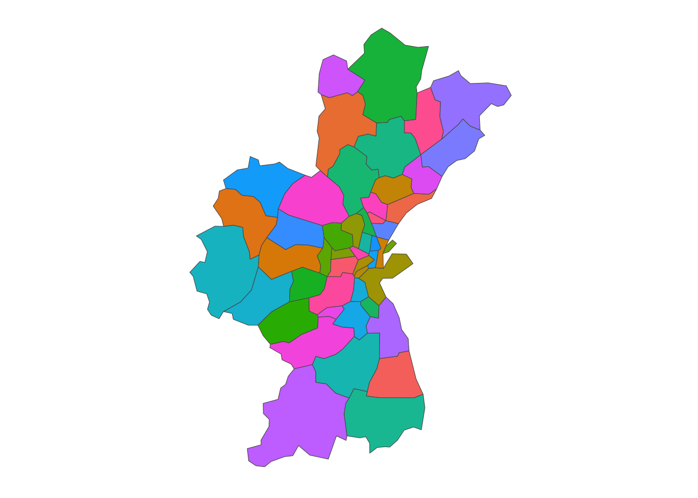

library(tidyverse) # Her får vi %>%, ggplot2 og andre smarte funktioner.
library(sf) # Skal bruges til at arbejde med "simple features" (figurer).Baggrund
Da jeg skulle lære at lave kort i R, lavede jeg et par hurtige googlesøgninger, hvor jeg kom frem til en god guide lavet af Mikkel Freltoft Krogsholm (2021). Jeg opdagede dog hurtigt, at guiden er out-of-date - og derfor skriver jeg denne guide.
I denne guide vil jeg gennemgå hvordan man kan skabe et kort over alle afstemningssteders områder i Danmark. Vi vil både producere et kort for Aarhus Kommune (Figur 2) og et kort for alle afstemningsområder i hele Danmark (Figur 1).
Pakker
I R-universet findes der flere pakker til at arbejde med kort. Jeg har valgt at bruge {sf}som den pakke jeg sætter mig ind i, hvad kan. De fleste kan grundlæggende det samme og er bygget op omkring geometry, der er den kolonne (eller variabel) i en dataframe, der indeholder figurerne til kortet.
Først indlæser vi alle pakker der skal bruges.
Data
For at tegne et præcist danmarkskort kan vi hente geojson data fra Styrelsen for Dataforsyning og Infrastruktur (2024). De udstiller en udmærket API der kan levere kortdata til os. For at vi kan benytte en API i R skal vi først definere et URL og dernæst bede om at downloade den fil der hører til på den hjemmeside.
- Først definerer vi
APIensURL.
## Gemmer URL til API-kald
url <- "https://api.dataforsyningen.dk/afstemningsomraader?format=geojson"Du behøver ikke at vide hvad en API er for at kunne gennemføre denne guide.
- Dernæst beder vi
Rom at downloade den efterspurgte fil til en midlertidig placering i computerens hukommelse.
# Skaber midlertidig fil
geofile <- tempfile()
# Henter geojson til tempfile
download.file(url, geofile)Vi bruger funktionen download.file() og giver den APIens URL og den midlertidige dataplacering, hvor vi ønsker dataene hentet til.
- Til sidst omformer vi
geoJSONtil etsfformat somRkan forstå.
# Læser datafilen ind i R
geodata_st <- st_read(geofile)
afstemningssteder_geodata <- st_as_sf(geodata_st)Her omformes først til st og dernæst til sf.
Nu har vi en dataframe i afstemningssteder_geodata der indeholder de figurer vi skal bruge for at lave et danmarkskort!
Optimering af data
For at vi nemt kan rendere vores plots er det en god ide at gøre figurerne en smule mindre. Især når vi er helt nede på afstemningsstedsniveau. Det er nok ikke så relevant, hvis vi arbejder med kommuner eller landsdele.
afstemningssteder_geodata <- rmapshaper::ms_simplify(afstemningssteder_geodata,
keep = 0.01, keep_shapes = TRUE)Her indlæser vi rmapshaper::ms_simplify() med pakkens navn for at slippe for at indlæse hele pakken - Vi skal nemlig ikke bruge det hele! Det samme har vi gjort med ggthemes::theme_map() nedenfor, fordi der kun skal bruges det ene theme
Visualisering
Nu kommer vi til den sjove del - At lave selve kortet! Vi skal bruge {ggplot2} fra det velkendte tidyverse, præcis som når vi laver grafer i mange andre sammenhænge.
Vi bruger geom_sf, der er indbygget i {ggplot2} til at tegne de figurer der er opbevaret i vores dataframe. Jeg putter derudover også ggthemes::theme_map() på, fordi jeg ikke synes kort behøver akselinjer og en baggrund. theme_map() er mit klart foretrukne tema til kort.
ggplot(afstemningssteder_geodata) +
geom_sf() +
ggthemes::theme_map() +
labs(title = "Afstemningssteder i Danmark",
caption = "Kilde: DAWA/DAGI") +
theme(legend.position = "none",
plot.title = element_text(size = 20),
plot.caption = element_text(size = 10))
Visualisering af udsnit
For at kun vise de afstemningsområder der ligger i Aarhus Kommune kan vi benytte os af filter() funktionen fra {dplyr} pakken. Med den kan vi filtrere i vores dataframe, så der kun vises afstemningssteder, hvor kommunenavnet er “Aarhus”. Derudover har jeg tilføjet et fill på afstemningsområdets navn for at give hver område sin egen farve.
afstemningssteder_geodata %>%
filter(kommunenavn == "Aarhus") %>%
ggplot(aes(fill = navn)) +
geom_sf() +
ggthemes::theme_map() +
theme(legend.position = "none")

Samlet kode
Alt hvad jeg har gennemgået i denne guide kan findes i et samlet r-script på min github. Den kan også findes her på hjemmesiden.
Referencer
Krogsholm, Mikkel Freltoft. 2021. “Easy Maps of Denmark in R LinkedIn”. https://www.linkedin.com/pulse/easy-maps-denmark-r-mikkel-freltoft-krogsholm/.
Styrelsen for Dataforsyning og Infrastruktur. 2024. “DAWA: Danmarks Adressers Web API Hos Dataforsyningen”. https://dawadocs.dataforsyningen.dk/dok/guides.
Citat
Henvis til denne guide som:
@online{bang-larsen2024,
author = {Bang-Larsen, Aleksander},
title = {Nemt Danmarkskort i R},
date = {2024-06-29},
url = {https://aleksanderbl.dk/guides/2024-05-19-danmarkskort-i-r},
langid = {da}
}
BibTeX henvisning:
Bang-Larsen, Aleksander. 2024. “Nemt Danmarkskort i R.”
June 29, 2024. https://aleksanderbl.dk/guides/2024-05-19-danmarkskort-i-r.